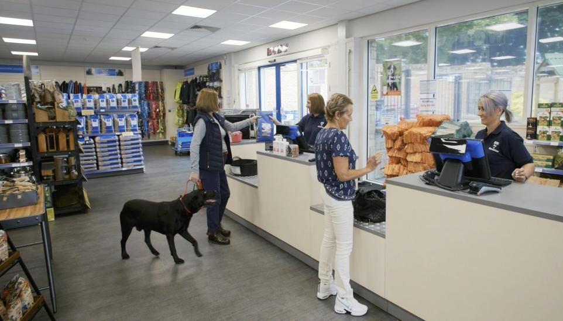
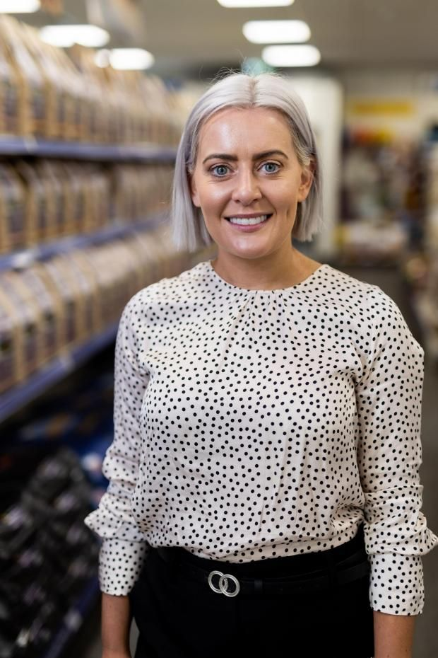

WCF Pet & Equestrian support local animal charities
WCF Pet & Equestrian are
building on the success of its store charity scheme by rolling it out for a
second year. All eight WCF Pet & Equestrian stores are taking part in the
scheme, with each store raising money for an animal charity in their area
chosen by colleagues working in the store.

As part of the initiative, customers can buy pre-filled donation bags packed with essentials including food, supplements, toys, treats and health care items. WCF Pet & Equestrian has also pledged to donate three per cent of money redeemed in-store through its loyalty card scheme, and each store will host fundraising events throughout the year.
Jade Earley, General Manager of WCF Pet & Equestrian, said: “It’s really important to us that we do everything we can to support local charities and, because we specialise in pet products, it made sense for us to choose charities which are close to our hearts. Our team has really got behind this initiative, with each store selecting the charity they want to support. As well as the donation bag scheme, we support each charity's own fundraising efforts via our social media channels and through our in-store events, and this year we are also making a financial contribution as a company.”
Liz Fell, Fundraising Officer at Oak Tree Animals’ Charity which is being backed by the Carlisle store, said: “It’s brilliant to have the support of a local business such as WCF Pet & Equestrian, both through raising money and also highlighting the work we do providing a safe place for animals in their time of need. Ongoing fundraising and new sources of revenue are crucial to continuing our work and we’re delighted to be part of this partnership.”
The pre-filled donation bags are available in different values of up to £10, with all items collected together and donated to charity by the team. Charities are able to request items which will be most useful to them for inclusion in the bags.

Press Links
- Cumbria animal charities supported by WCF Pet & Equestrian
- Cumbria animal charities supported by WCF Pet & Equestrian
- Cumbria animal charities supported by WCF Pet & Equestrian
- Cumbria animal charities supported by WCF Pet & Equestrian
- Cumbria animal charities supported by WCF Pet & Equestrian
- Pet stores show support for Cumbrian animal charities
- Retailer WCF repeats charity support scheme
- Pet stores show support for local animal charities
- Skipton Pet Store Continues Support For Aireworth Dogs In Need
- WCF Pet & Equestrian Skipton's Aireworth Dogs in Need scheme
- Business pledges continued support to dog rescue charity